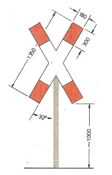
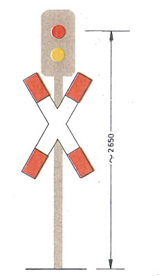
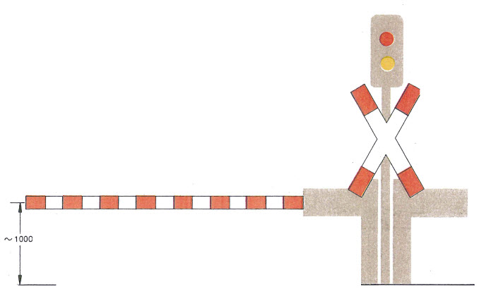
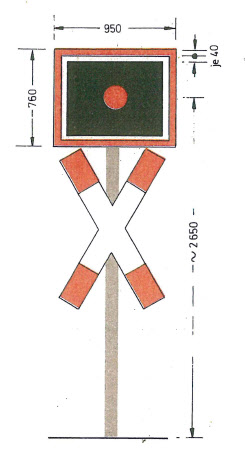
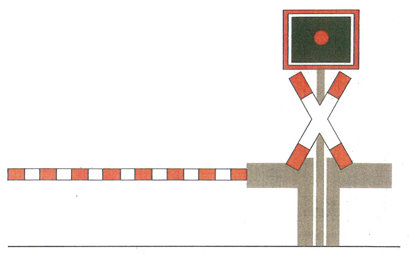

(Fundstelle: BGBl. I 1991, Nr. 30 Anlageband S. 15 - 19)
| Maße in Millimetern |
Bild 1
Andreaskreuz
Andreaskreuz
 |
|
Bild 2
Lichtzeichen
Lichtzeichen
| Farbfolge GELB-ROT | |
 |
|
| Siehe auch Erläuterungen zu Bild 1 |
Bild 3
Lichtzeichen mit Halbschranke oder Schranke
Lichtzeichen mit Halbschranke oder Schranke

- 1.
- Die Schrankenbäume müssen ausreichend erkennbar sein, solange sie bewegt werden oder geschlossen sind.
- 2.
- Die Schraffen sind senkrecht auszuführen; sie dürfen bis zur Erneuerung schräg sein.
- 3.
- Halbschranken sperren nur die Zufahrt auf den Bahnübergang; ihre Länge ist so zu bemessen, daß der Straßenverkehrsteilnehmer ungehindert den Bahnübergang räumen kann.
Siehe auch Erläuterungen zu den Bildern 1 und 2
Bild 4
Rotes Blinklicht
Rotes Blinklicht

- 1.
- Zusätzlich zum Blinklicht dürfen Wecker oder andere hörbare Zeichen verwendet werden.
- 2.
- In Ortschaften oder bei beengten Verhältnissen darf das Andreaskreuz um 90° gedreht (quer) über dem Blinklicht angebracht und vom Höhenmaß “~ 2650” abgewichen werden.
- 3.
- Ein Blinklicht in Pfeilform zeigt an, daß es nur für den Straßenverkehr in Richtung des Pfeiles gilt.
- 4.
- Für besondere Blinklichter an Fußwegen sind Signalschirme mit einer Höhe von 400 mm und einer Breite von 500 mm zugelassen. Auf Andreaskreuze kann gemäß § 11 Abs. 3 verzichtet werden.
- 5.
- An mehrgleisigen Strecken dürfen Bahnübergänge mit schachem Verkehr durch Blinklichter in Verbindung mit einer im Signalschirm angebrachten gelben Leuchtschrift “2 Züge” und Wecker oder andere hörbare Zeichen gesichert werden. Die zusätzlichen Sicherungen werden wirksam, wenn und solange der Bahnübergang für einen weiteren Zug gesperrt bleibt.
Bild 5
Rotes Blinklicht mit Halbschranke
Rotes Blinklicht mit Halbschranke

Siehe Erläuterungen zu den Bildern 1, 3 und 4